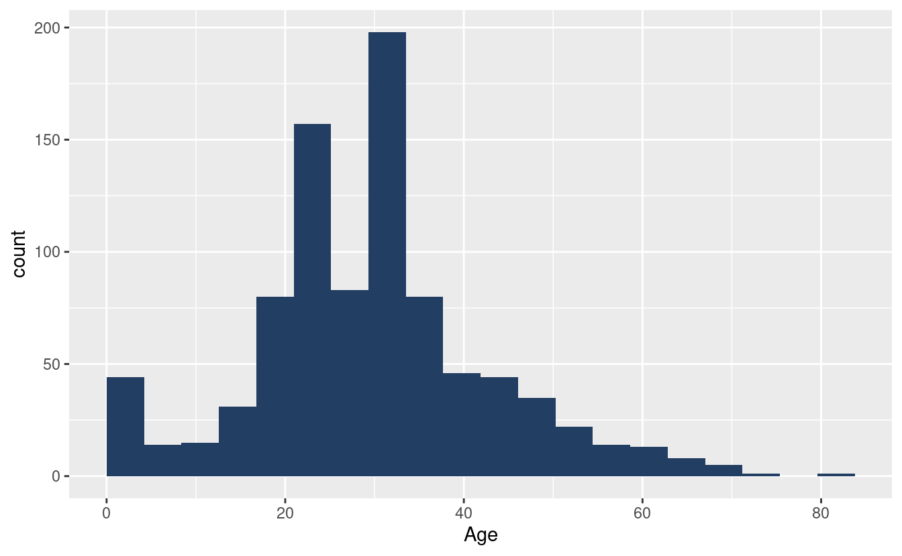
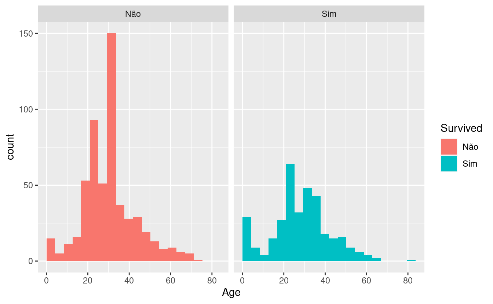
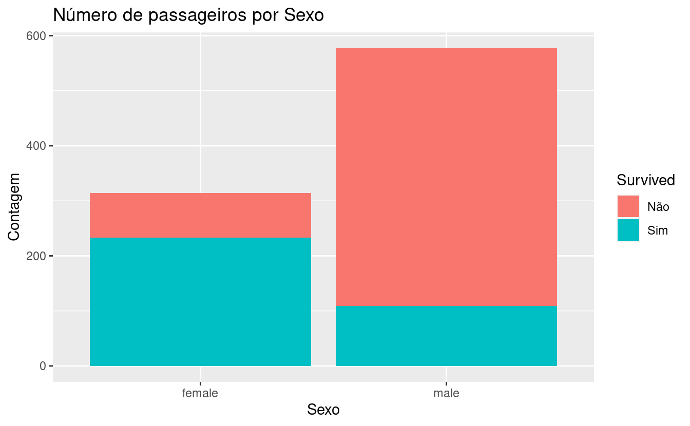

16 Revisão - Titanic
16.1 Objetivo
O objetivo deste capítulo é fazer uma breve revisão do que foi ensinado no curso. Para isso, será utilizada a base disponível no pacote titanic. É esperado que o aluno consiga realizar manipulações nos dados, visualizações e um modelo preditivo. A análise deve ser demonstrada em um documento criado com o RMarkdown.
16.2 Carregando os Dados
## PassengerId Survived Pclass Name Sex Age SibSp Parch
## 1 1 0 3 Braund, Mr. Owen Harris male 22 1 0
## 2 2 1 1 Cumings, Mrs. John Bradley (Florence Briggs Thayer) female 38 1 0
## 3 3 1 3 Heikkinen, Miss. Laina female 26 0 0
## 4 4 1 1 Futrelle, Mrs. Jacques Heath (Lily May Peel) female 35 1 0
## 5 5 0 3 Allen, Mr. William Henry male 35 0 0
## 6 6 0 3 Moran, Mr. James male NA 0 0
## Ticket Fare Cabin Embarked
## 1 A/5 21171 7.2500 S
## 2 PC 17599 71.2833 C85 C
## 3 STON/O2. 3101282 7.9250 S
## 4 113803 53.1000 C123 S
## 5 373450 8.0500 S
## 6 330877 8.4583 Q| Variável | Descrição |
|---|---|
| PassengerId | Identificador do Passageiro |
| Survived | Variável de indicadora de sobrevivência (0 = Não Sobreviveu, 1 = Sobreviveu) |
| Pclass | Classe do passageiro |
| Name | Nome do passageiro |
| Sex | Sexo do passageiro |
| Age | Idade do passageiro |
| SibSp | Número de irmãos/cônjuge no navio |
| Parch | Número de pais e filhos no navio |
| Ticket | Número da passagem |
| Fare | Preço da passagem |
| Cabin | Código da cabine |
| Embarked | Porto de embarque |
16.3 Manipulando os dados
Nesta seção, faremos alguma alteração nos dados. Veja o summary do dataset.
## PassengerId Survived Pclass Name Sex Age
## Min. : 1.0 Min. :0.0000 Min. :1.000 Length:891 Length:891 Min. : 0.42
## 1st Qu.:223.5 1st Qu.:0.0000 1st Qu.:2.000 Class :character Class :character 1st Qu.:20.12
## Median :446.0 Median :0.0000 Median :3.000 Mode :character Mode :character Median :28.00
## Mean :446.0 Mean :0.3838 Mean :2.309 Mean :29.70
## 3rd Qu.:668.5 3rd Qu.:1.0000 3rd Qu.:3.000 3rd Qu.:38.00
## Max. :891.0 Max. :1.0000 Max. :3.000 Max. :80.00
## NA's :177
## SibSp Parch Ticket Fare Cabin Embarked
## Min. :0.000 Min. :0.0000 Length:891 Min. : 0.00 Length:891 Length:891
## 1st Qu.:0.000 1st Qu.:0.0000 Class :character 1st Qu.: 7.91 Class :character Class :character
## Median :0.000 Median :0.0000 Mode :character Median : 14.45 Mode :character Mode :character
## Mean :0.523 Mean :0.3816 Mean : 32.20
## 3rd Qu.:1.000 3rd Qu.:0.0000 3rd Qu.: 31.00
## Max. :8.000 Max. :6.0000 Max. :512.33
## 16.3.1 Variável Survived
A variável Survived está definida como indicadora (1 ou 0). Como será usada em um modelo de classificação, é interessante que esta variável seja transformada ou que seja criada uma nova variável, tornando-a uma variável do tipo factor ou character.
16.3.2 Variável Name
Na variável Name, percebe-se que os passageiros possuíam títulos: Mr., Miss., Mrs. etc. Seria interessante criar-se uma nova variável que possua apenas o título do passageiro. Para isto, precisaremos usar a função str_extract() do pacote stringr e um pouco de regex.
Quais são os títulos mais comuns?
## # A tibble: 17 x 2
## title n
## <chr> <int>
## 1 mr. 517
## 2 miss. 182
## 3 mrs. 125
## 4 master. 40
## 5 dr. 7
## 6 rev. 6
## 7 col. 2
## 8 major. 2
## 9 mlle. 2
## 10 capt. 1
## 11 countess. 1
## 12 don. 1
## 13 jonkheer. 1
## 14 lady. 1
## 15 mme. 1
## 16 ms. 1
## 17 sir. 1Faremos mais uma modificação. Pode ser interessante agregarmos os títulos menos frequentes em uma única categoria.
16.4 Idade
Como vimos no summary, há alguns valores faltantes para a variável Age. Alguns modelos conseguem tratar internamente os missing values, outros não. Para o modelo que usaremos, não podemos ter missings. Assim, podemos eliminar essas observações ou atribuir-lhes um valor. Utilizaremos a segunda opção.
Para imputação, existem inúmeros métodos, podendo até mesmo ser utilizado o modelo auxiliar. Aqui, vamos inserir a mediana da idade, separando por título e sexo.
titanic_train <- titanic_train %>%
group_by(Sex, title) %>%
mutate(Age = ifelse(is.na(Age), median(Age, na.rm = TRUE), Age))
summary(titanic_train$Age)## Min. 1st Qu. Median Mean 3rd Qu. Max.
## 0.42 22.00 30.00 29.43 35.00 80.0016.4.1 Exercício
- Crie mais duas variáveis:
16.5 Visualizações
Abaixo, criamos algumas visualizações iniciais. Explore as demais variáveis da base e mostre relações com a variável Survived.
library(hrbrthemes)
theme_set(theme_ipsum(base_size = 10))
ggplot(titanic_train, aes(x = Age)) +
geom_histogram(boundary = 0, fill = "#223e63", bins = 20)
ggplot(titanic_train, aes(x = Age, fill = Survived)) +
geom_histogram(boundary = 0, bins = 20) +
facet_wrap(~ Survived) +
scale_fill_ipsum()
ggplot(titanic_train, aes(x = Sex, fill = Survived)) +
geom_bar() +
labs(title = "Número de passageiros por Sexo",
y = "Contagem",
x = "Sexo")
titanic_train %>%
group_by(Sex, Survived) %>%
summarise(n = n()) %>%
group_by(Sex) %>%
mutate(prop = n/sum(n) * 100) %>%
ggplot(aes(x = Sex, y = prop, fill = Survived)) +
geom_col() +
labs(title = "Proporção de Sobreviventes por Sexo",
y = "%",
x = "Sexo") +
scale_fill_ipsum("Sobreviveu")
- Crie mais duas visualizações:
16.6 Modelo Preditivo
- Crie um modelo preditivo a partir da base de treinamento. Para isso, selecione um subconjunto de variáveis que você utilizará como input (features).
- Divida a base de treinamentos em duas: 70% para treinamento e 30% para a validação.
- Utilize a função
glm()para estimar um modelo de regressão logística. - Calcule a acurácia do modelo.
- Treine o modelo na base
titanic_traincompleta. - Realize predições para base
titanic_test.